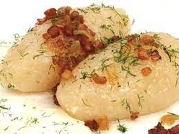

Zeppelins

Description
Lithuanian potato-meat dumplings are known as zeppelins or "cepelinai" because of their shape. These hearty
and rich dumplings take some time to make, but they are well worth the effort. Don't be intimidated by the
recipe as it has a few steps in order to make each component, including the filling, the dumpling, and the gravy.
The national dish of Lithuania, "cepelinai" are best served and eaten as soon as made. The cooked dumplings are
hard to store, and are best piping hot and covered with hot gravy.
Ingredients
For the Meat Filling:
- 1 pound ground pork, or an equal mix of pork, beef, and veal
- 1 medium onion, peeled and finely chopped
- 1 1/2 teaspoons kosher salt
- 1/4 teaspoon freshly ground black pepper
- 1 large egg, beaten
For the Dumplings:
- 1 tablespoon freshly squeezed lemon
- 8 large Idaho potatoes, peeled and finely grated, about 5 pounds
- 2 large Idaho or Russet potatoes, about 1 1/2 pounds, peeled, boiled, and riced
- 1 medium onion, finely grated
- 1 1/2 teaspoons kosher salt, more as needed
- 1 tablespoon cornstarch
For the Gravy:
- 1/2 pound bacon, diced
- 1 large onion, coarsely chopped
- 1 cup sour cream
- Freshly ground black pepper, to taste
- 1 to 2 tablespoons milk, as needed
Steps
- Gather the ingredients.
- Add the lemon juice to the raw grated potatoes so they don't turn brown.
- Place them in a fine-mesh cheesecloth or cotton dishtowel, and twist over a large bowl to get rid of the excess water.
- Pour off the water, reserving the potato starch at the bottom of the bowl.
- Unwrap the cheesecloth and place the raw potatoes in the bowl with the potato starch you reserved from the bottom of the bowl.
- Add the cooked riced potatoes, grated onion, and the salt, more to taste. Mix well.
- Put a large stockpot of well-salted water on to boil.
- To form the zeppelins, take about 1 cup of dumpling mixture and pat it flat in the palm of the hand.
- Place 1/4 cup or more of meat mixture in the center and, using slightly dampened hands, fold the potato mixture around the meat into
a football shape, sealing well. Continue until both mixtures are used.